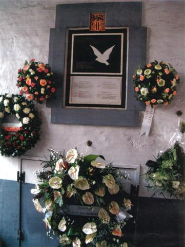

> nieuwsbrief >
2007- nr 1
Inhoud
Eens te meer nadert de
jaarwisseling met rassé schreden. Voor de penningmeester brengt
dit mee om
ervoor te zorgen dat de hernieuwing van de bijdragen andermaal vlot
verloopt.
Folder
De generatie van hen die het
allemaal meebeleefd en meegemaakt hebben – de garde van de oude
getrouwen die
ooit deel uitmaakte van het Verdinaso – is stilaan aan het
wegdeemsteren in de
nevel van de tijd. De biologische wet van komen en gaan slaat vrijwel
maandelijks toe, en dit weerspiegelt zich niet slechts in onze In
Memoriam-rubriek, maar uiteraard ook in ons ledenbestand. Wij blijven
nochtans
geloven in de waarde van de Dinaso-boodschap, ook voor de komende
generaties,
niet in het minst in het solidarisme als redplank voor een alsmaar meer
verloederde samenleving. Daarom ontwierpen wij andermaal een folder die
op
eenvoudige aanvraag bij het secretariaat kan aangevraagd worden. Spreek er een jongere mee aan met
aandacht voor onze geschiedenis en bekommernis over de toekomst –
en overtuig
hem of haar er van om lid te worden van ons Studiecentrum. Alleen zo
zullen wij
ook op langere termijn in staat blijken om onze opdracht te blijven
vervullen.
Ook kan gedacht worden aan een geschenkabonnement op onze publicaties.
Vermeld
dan wel uitdrukkelijk naam en volledig adres van de gegadigde. Zowel
hij/zij
als uzelf ontvangt dan van ons bij wijze van dank – voor zover de
voorraad
strekt – een exemplaar van onze extra-uitgave Joris
van Severen. Een Apologie, 128 p., van de hand van onze
medewerker Rudy Pauwels.
Vooruitblik op 2007
Naast de
publicatie van het Jaarboek Joris van
Severen – reeds het 11e in de rij! – in mei aanstaande,
zijn we in oktober
2007 tevens ook aan ons 5e Colloquium
Joris van Severen toe. We hopen u
in onze volgende Nieuwsbrief alvast
datum en plaats te kunnen meedelen. Verder zien we uit naar de
aangekondigde
publicatie van de Universitaire Pers van de definitieve Inventaris
van het Archief Joris van Severen dat berust binnen de
Leuvense Universiteitsbibliotheek.
Buitenkansen
–
voorbehouden aan de leden
Zoals
het in de lijn
van de verwachtingen lag waren “de
krenten”
uit ons aanbod zó het secretariaat uit. Wat nog rest vindt
u hieronder: We stellen deze publicaties andermaal ter beschikking van
onze
leden tegen de vermelde prijs (te verhogen met de verzendkosten):
1.6.
Luc Delafortrie, Joris
van
Severen en De Nederlanden –
een levensbeeld, Oranje,
Zulte, 1963, geb., ill., 272 pp.:
20 €
1.8.
P. Meeus & M.
Cailliau, Joris
van Severen –
Plus est en vous, Oranjejeugd,
Turnhout, 1986, geniet,
ill., 48 pp.,: 2 €.
1.10
Hendrik Elias, 25
jaar
Vlaamse Beweging –
1914-1939, DNB,
Antwerpen 1969, 4
boekdelen, gen., 948 pp.,: 50 €
1.11
Lode Claes, De
afwendbare
nederlaag, DF,
Leuven, 1986, gen –
128 pp., 3 €
1.13
Arthur de Bruyne
e.a., Bloemlezing
uit Rommelpot, Roerdomp,
Brecht, 1983, gen., ill., 144
p., 10 €
1.15
1.16
Johan Anthierens,
De
IJzertoren. Onze trots en onze schande, Leuven,
1977, gen.,
ill., 263 p.: 5 €
1.17
Vital Celen, Zóó
schrijven
de Fransch-Vlamingen, Wiek
Op, Brugge, 1943, gen., 232 p. 5 €
Verzendkosten:
1 boek:
2,30 €;
2 boeken 3;22 €;
3 boeken: 3,70 €;
4 en meer boeken:
7,40 €.
Bestellen met opgave van het gewenst
boeknummer, via overboeking van het verschuldigd bedrag verhoogd met de
verzendkosten
op rekening 000-1705814-69 t.n.v. Studiecentrum Joris van Severen, 8900
Ieper. Bestellingen
worden enkel na betaling uitgevoerd volgens de regel “wie
eerst komt, eerst maalt”.
Joris
van
Severen op het internet
In
reactie op de in onze vorige Nieuwsbrief
(4/2006)
opgenomen
internetpagina’s omtrent Joris van Severen (pp. 11-16) werd ons
medegedeeld dat
de man achter die pagina’s helemaal niets te maken heeft met
baron Jean de
Sélys-Longchamps. “De echte Sélys de Longchamps zou
zich waarschijnlijk omkeren
in zijn graf als hij zag wat er allemaal gebeurde onder zijn
naambescherming”,
meldt onze correspondent. De site onder het in onze Nieuwsbrief
opgegeven
www-adres bestaat trouwens niet langer.
Met
onze excuses uiteraard ten overstaan van de familie de
Sélys-Longchamps, wiens
telg Jean er geen behoefte aan had zich te verschuilen achter andermans
naam
bij het plegen van zijn daadwerkelijk verzet (tijdens de Tweede
Wereldoorlog).
Over
Joris van Severen en het Verdinaso vindt men ook enige informatie op de
internetadressen: www.vjwestland.be/fraude.htm
en www.vjwestland.be/sorel/htm
zo werd ons gemeld.
Tussen 11
juli 1917 en 11 juli 1918 verspreidde de Frontbeweging de zogenaamde
“Open
Frontbrieven”. Deze voor de Vlaamse Beweging zo belangrijke
historische
pamfletten waren zo goed als onvindbaar geworden. Daarom nam IJzerwake
het
initiatief tot heruitgave. Zonder toevoegingen of weglatingen, zonder
interpretaties achteraf. Zo kan de lezer zich zelf een oordeel vellen
over de
ware inhoud van de begrippen “Zelfbestuur”, “Nooit
meer oorlog” en “Godsvrede”.
Verkoopprijs 8,50 euro (inclusief verzendingskosten)
te
storten op 733-0112827-46 (IJzerwake, 2018 Antwerpen) met vermelding 'Open
Frontbrieven'.
Het
signaleren overwaard
Wat viel er op de klassieke zender Klara te
beluisteren in De tuin van Eden op
dinsdag 7 november jongstleden?
Juist: het door Bart Stouten voorgelezen gedicht van
Edmund
Forschbachs ontmoeting met Joris
van Severen
Piet
Tommisssen, Ukkel
Edmund Forschbach (1903-1988) behoorde in
de Republiek van Weimar tot de leiding van de DNVP (Deutschnationale
Volkspartei), waarin de industrieel en politicus Alfred Hugenberg
(1865-1951) van 1928 af, de eerste viool speelde. Hij bracht het tot
afgevaardigde in de Pruisische Landtag en zetelde op het einde
van 1933
als volksvertegenwoordiger in de Reichstag.1 Kort na
de op de
zogeheten Röhmrevolte volgende moorden week deze
politicus naar
Nederland uit, keerde evenwel enige tijd later naar Duitsland terug en
vestigde
zich als advocaat in Berlijn. Tijdens Wereldoorlog II werd hij
gemobiliseerd.
In de vijftiger jaren van de vorige eeuw stond hij eerst aan het hoofd
van de
pers- en informatiediensten, daarna aan dat van een departement in het
ministerie van binnenlandse zaken van de toenmalige Bundesregierung
(Bonn).
Deze man was bevriend met Edgar Jung
(1894-1934), een leerling van Pareto en de auteur van meerdere
geschriften,
waaronder het omvangrijke opus Die Herrschafi der Minderwertigen (1927).2
Jung staat vooral bekend als de éminence grise van de
gewezen premier
Franz von Papen (1879-1969), voor wie hij de bekende Marbacher Rede
schreef,
een redevoering die de woede van Adolf Hitler (1889-1945) opwekte en
haar auteur,
in casu Jung, fataal is geworden.3
Forschbach heeft de behoefte gevoeld voor
Jung een kleine gedenkzuil op te richten, in de vorm van een boek
waarin hij
zijn ontmoetingen, gesprekken en ervaringen met de langjarige vriend
navertelt.
En in dat boek vermeldt hij ook een treffen met Joris van Severen, dat
in juli
1934 heeft plaatsgehad. Voor zover mij bekend wordt het in de
literatuur
nergens vermeld, alhoewel het niet van belang ontbloot is. Om die reden
deel ik
hier de desbetreffende passus uit Forschbachs boek in vertaling mee:
“…
Later ondernam ik een reis door België. Ik wou Léon
Degrelle bezoeken, trof hem
echter niet aan. Toentertijd moet de latere Führer van het Waalse
Legioen in de
SS nog een felle vijand van Hitler zijn geweest. Op de voorpagina van
het
tijdschrift van zijn Rex-beweging zag ik een hakenkruis dat uit een zee
van
bloed oprees.
Op 25 juli bij Joris van Severen van de
Dinaso-beweging. De Dinaso-beweging was fascistisch en extreem
Vlaams-nationalistisch. Des te meer kwam ik onder de indruk van het
harde
oordeel dat ik uit de mond van Van Severen hoorde over Hitlers moorden
van 30
juni en over de zonet gepleegde moord op Dollfuss. Hij zegde:
‘Hitler besmeurt
onze ideeën, als hij mensen die hem in de weg staan, zonder
gerechtelijk vonnis
laat doden.’…” 4, 5
Noten
1 Dietrich Bronder presenteert
Forschbach in zijn overigens niet te versmaden boek Bevor Hitler
kam. Eine
historische Studie (Genève: Marva. 2e aangevulde ed. =
1975, 462 p.) als
een lid van de SA die in 1933 zou opgeroepen hebben om op Hitler te
stemmen (p.
154). Wat nog maar eens bewijst hoe voorzichtig een vorser moet zijn!
In dit
geval lijkt me Forschbachs relaas de meest betrouwbare versie van de
feiten.
2
E. Jung, Die
Herrschafl der Minderwertigen.
Ihr Zerfall und ihre Ablösung durch ein Neues Reich, Berlijn:
Verlag
Deutsche Rundschau, (1927) 2de aangevulde en aangepaste ed. = 1930, 692
p.
Zonder haar te kunnen beantwoorden, veroorloof ik me toch de vraag of
de studie
van dit opus niet thuishoort in de studie van het ideeëngoed van
het Verdinaso?
3
De tekst van deze rede vindt
men in: E. Forschbach, Edgar J. .Jung, ein konservativer
Revolutionär. 30.
Juni 1934, Pfullingen: Neske, 1984, 183 p.; cf. pp. 154-174.
4
E. Forschbach, op. cit. (vt
3), p. 131.
5
In extremis verneem
ik van de heer
Gedenkplaat Brugge

De
Gedenkplaat voor de Brugse slachtoffers van Abbeville
aan het
poorthuis van het Bourgoensche Cruysse
- het
voormalige woonhuis van
Joris van Severen –
na de
plechtigheid van 20 mei
2006
Nieuw
Verdinaso
Luc
Versteylen
“Bij de scouts was er een jonge
advocaat die de
Groot-Nederlandse gedachte uitdroeg, en dat sprak mij erg aan. Ik kende
de
Zeventien Provinciën uit het hoofd en ik had grote bewondering
voor Joris van
Severen en voor Leopold III.
Die advocaat was bij het geheime Verdinaso,
niet bij
degenen die collaboreerden. Er was een strekking in de beweging die
elke vorm
van samenwerking met de Duitsers afwees.
Ik sloot daarbij aan. Wij droegen als uniform
een
zwarte das. Wij wisten enkel van elkaar wie lid was, niemand anders was
op de
hoogte. Op een zeker ogenblik werden wij bij de opvolger van Joris van
Severen,
de graaf van Limburg-Stirum van Overijse geroepen. Wij mochten dat
thuis niet
zeggen en dat wrong.
Wij waren zogezegd op scoutskamp in een
beukenbos. De
Vijfde Symfonie van Beethoven werd er gespeeld op zo’n ouderwetse
platendraaier. Wij moesten strak in het gelid staan en het Wilhelmus
zingen.
Blijkbaar wisten ze dat wij priester wilden worden en ze wilden dat wij
kozen
tussen onze roeping en onze ‘trouw aan het vaderland’.
Als voorbeeld werd ons het verhaal verteld
over een
andere jongen die opgepakt was door de Duitsers en die geboeid
achterover door
het raam was gesprongen om zijn kameraden niet te verraden. Dat maakte
op ons
een geweldige indruk, maar moesten wij dan liegen tegenover onze
ouders, onze
leraars, onze schoolmakkers? Dan hebben wij het thuis verteld en later
niets
meer van het geheime Verdinaso gehoord. Het geheim is tot nu bewaard
gebleven…”
_____________________
Uit: Luc Versteylen, in: Walter Gansemans, Wij zijn nooit kind geweest. Opgroeien
tijdens de Tweede Wereldoorlog, Davidsfonds/Leuven, 2006, pp.
33-41. ISBN
90 5826 390 8.
Naschrift
We troffen een soortgelijk getuigenis van de
auteur –
de peetvader van Agalev - al aan op het internet (zie Nieuwsbrief
Joris van Severen, 2/2005, p. 19). In tegenstelling tot
de vorige tekst dient bovenstaand getuigenis ondubbelzinnig gesitueerd
te
worden binnen de context van de bezettingsjaren. De graaf van
Limburg-Stirum
was getrouwd met een prinses de Croÿ, lid van het Verdinaso. Naar
het zich laat
aanzien moet onder het “geheime Verdinaso” de door Louis
Gueuning gestichte en
geleide geheime Ordo Joris van Severen verstaan
worden. Deze orde had een jongerenafdeling die Ridderschap
genoemd werd en dit zal vermoedelijk de formatie
geweest zijn waarin Luc Versteylen kortstondig verzeild is geraakt. Het
zegel
van de geheime Joris van Severen-orde (zie hieronder) treft de lezer
wel vaker
aan in onze Nieuwsbrief.
Dat Graaf de Limburg-Stirum zich ooit
opgeworpen heeft
als “de opvolger” van Joris van Severen is nieuw. Die
interpretatie zal wel
ontsproten zijn aan de geest van de toenmalige adolescent Luc
Versteylen.
Gedenkboek
Joris van Severen 1894 - 1994
Naar aanleiding van de honderdste geboortedag van Joris van Severen, werd door het
voormalige Nationaal Studie- en
Documentatiecentrum Joris van Severen te Aartselaar, o.l.v. wijlen
Jef
Werkers, een luxueus Gedenkboek Joris van
Severen uitgegeven.
Dit in linnen gebonden Gedenkboek
(16 x
Ons Studiecentrum
Joris van Severen, de opvolger van het voormalige NSDC-JvS, kwam
recent in
het bezit van de beperkte restoplage van deze uitgave. We bieden onze
leden thans
dit referentiewerk - eenmalig - te koop aan voor 10 € (inclusief
verzendkosten); niet-leden betalen 15 €.
Een kort
inhoudsoverzicht:
Jan D’Haese, Joris
van Severen in de beeldende kunst
Alfons Sengier, Joris
van Severen in de literatuur
H. de Bois & L. Pauwels, Joris
van Severen en de ‘conservatieve revolutie’
Herinneringen....(28)
Alfons
van Opstal (†)
Militantenwerk
(2)
We besloten ons vorig relaas – Nieuwsbrief 4/2006 – met de vaststelling dat het
dat keer in
Terhagen niet verder kwam dan wat gescheld vanuit die linkse hoek. Dit
zou
uiteraard niet steeds het geval zijn. De gebeurtenissen te Terhagen
leidden al
kort daarop tot een heuse betoging aan het adres van onze drie aldaar
woonachtige militianen. Eén van hen had een broer die militeerde
bij de
communisten – overigens niet zo uitzonderlijke verhoudingen in
die verwarde
tijden! - en daardoor waren we op de hoogte van wat we konden
verwachten. Die
zondagnamiddag verzamelden tientallen rode vlaggen aan de overkant van
de
spoorweg en omstreeks 15.00 uur zette de stoet van + 200
betogers (uit
Kontich, Lint, Duffel, Lier - zich in beweging om uiteindelijk in onze
straat
op te duiken. We hadden de rolluiken neergelaten en aan de geopende
ramen met
een zestal man plaats genomen, voorzien van de nodige verweermiddelen,
alsof we
andermaal een belegerd politiek lokaal te verdedigen hadden.
De massa drumde echter met veel lawaai
voorbij onze
woning, de Rode Liga – door ons spottende Rode Liza genoemd
– voorop. Die dag
bleef het daarbij. Maar we dienden niettemin vast te stellen dat de
rode
terreur ons alsmaar meer armslag ontnam en we vroegen ons steeds vaker
af hoe
die terreur aan ons adres te doorbreken viel, zonder dat wij ons
daarbij
dienden te laten afslachten.
Sinds de Landdag te Tielt waren wij niet
langer
bewapend en sindsdien waren schietpartijen gelukkig uitgebleven. Thans
werd de
rode Anti-Oorlogs alsmaar opdringender: voordurend werd ons lokaal in
de
St.-Gumarusstraat bedreigd. We hadden voordien al de
‘Rodenbach’ aan de Van
Schoonbekestraat moeten verlaten, omdat de uitbater de voortdurende
herrie niet
langer verdroeg, en kwamen op de nieuwe locatie van de regen in de
drop. Van
bij de opening van het nieuwe Dinasohuis, dat opengehouden werd door
Achiel M.,
een militiaan uit Izegem, dienden we daar dag na dag de wacht op te
trekken.
En ook al hadden we een bondgenoot in de
persoon van
een adjunct-politiecommissaris die ons in de mate van het mogelijke op
de
hoogte hield, toch kon dit niet verhinderen dat we wel een vaker in
hachelijke
situaties terechtkwamen. Meestal gebeurde dit bij de aflossing van de
wacht in
het Dinasohuis. Zij die afgelost werden dienden ‘s avonds laat
met de fiets
naar huis toe en werden daarbij met stenen bekogeld. Eenmaal liep het
helemaal
uit de hand in de Rotterdamstraat. Toen de aanvallers dichtbij gekomen
waren
wierp Oscar van Keirsbilck hen zijn fiets in het gezicht vooraleer het
tot een
knokpartij kwam. De aanvallers bleken gewapend en er vielen drie
schoten,
waarbij Frans Peremans een kogel in zijn been kreeg. We zochten ons
vechtend
een onderkomen in een herberg, vooraleer de politie ten tonele
verscheen. We
werden gefouilleerd en er werden PV’s opgesteld. Bij de latere
zitting op het gerechtshof
kreeg Oscar 8 dagen gevang en mocht Frans een boete betalen voor
straatoproer!
De straffen en boeten waarmee we overladen
werden
vielen niet meer te tellen. Kort daarop werd de wet van kracht die
private
milities verbood en tevens ook een uniformverbod behelsde. Dat bracht
voor ons
problemen bij het handhaven van orde in eigen rangen. We zouden er al
vlug een
mauw weten aan te passen.
vervolg in volgend nummer)
In deze
rubriek verwijzen we zonder veel commentaar
naar recente publicaties waarin Joris van Severen en/of het Verdinaso
vermeld
worden. We citeren de meest treffende passussen woordelijk zonder
daarin
volledigheid na te streven. We verzoeken onze lezers, met ons, uit te
zien naar
publicaties die voor deze rubriek 'stof' kunnen leveren en ons kopie
van de
betreffende passages toe te sturen.
Een
pertinent antwoord
Q:
It is said that your party was founded by Nazi
collaborators and Holocaust deniers and that it still attracts
Holocaust
deniers. What is your reaction to them in your party and the fact that
it was
founded by Nazi collaborators?
A:
Do we attract Holocaust deniers or nazi's? Well,
sometimes a decent women attracts evil men, not because of her own
deeds, but
because her good name has been blackened by slander. This is our
problem too:
all
It's
is true however, that before WW.II, all political
movements in
________________
Bron:
Filip Dewinter in Jewish
Week - 28/10/05.
‘
20 mei
1940: Joris van Severen, leider van het Verdinaso, wordt samen met 21
andere
Belgen door Franse soldaten vermoord in de Franse stad Abbeville. Hij
behoort
tot een konvooi van 78 arrestanten die vanuit de gevangenis van Brugge
naar een
interneringskamp in Frankrijk worden gestuurd. Als een van de naar
schatting
5000 zogenaamde verdachten, Duitse staatsburgers, joden, communisten,
Belgische
politici, echte en vermeende spionnen, maar vooral onschuldigen, is hij
door de
Staatsveiligheid aangehouden na de Duitse inval op 10 mei. De gronden
voor zijn
aanhouding zijn aanvechtbaar. De man die in 1928 nog in volle Kamer had
uitgeroepen: “
_______________
Emmanuel
Gerard & Karel van Nieuwenhuyse (red.), Scripta Politica.
Politieke
geschiedenis van België in documenten (1918-2000). Uitgeverij
Acco, Leuven,
2005, ISBN 90-334 5809-8. Tekst pp. 170-171, geïllustreerd met 2
foto’s van het
grafmonument te Abbeville.
Objectief?
“Parmi
les 72 victimes, Joris van Severen, “leider” du mouvement
grand-néerlandais (ou
même grand-bourguinon) Verdinaso (Ligue des Nationaux Solidaristes Thiois. C’était
indubitablement un fasciste pur jus. Pourtant il
avait enjoint
ses adhérents de défendre rigoureusement le pays.
Désorientés, beaucoup de ceux-ci
s’enrôleront dans la milice noire, DeVlag,
ou dans
________________
Charles Turquin, Belgique 1940-45, pagina 35,
Ed. Granchez,
Parijs, 1999, ISBN 2-7339-0610-0.
Jules
Vanneste, legeraalmoezenier
“(…)
Onverschrokken bleef hij – Jules Vanneste – zijn
manschappen nabij, beleefde er
verschrikkelijke ervaringen mee en koos – opmerkelijk! –
tégen het
Vlaamsonkundig legerestablishement in, de zijde van de kleine piot die
geen
Franstalige bevelen begreep en zo vaak in een levensgevaarlijke
situaties
terechtkwam. In zijn Bataljon ontmoette hij ook de jonge Vlaamse
intellectueel
onderluitenant Joris van Severen, de latere leider van het Verdinaso.
‘Een
prachtjongen!’ moest de aalmoezenier getuigen, ‘maar
misschien wel wat
naïef.’(…)”
________________
D. Berat,
Jules Vanneste, legeraalmoezenier, in: Avondmijmeringen. Contactblad
associatio sacerdotum, november-december
2005.
Een
“k” te weinig
DINASO: Verbond van
Dietsche Nationaal Solidaristen (VERDINASO): 1931 gegründete
Bewegung, die ein
Ende machen wollte mit der Zersplit-terung der flämischen
Bewegung.
Rechts-revolutionäre Reform von Staat und Gesellsehaft,
autoritär,
Korporatismus (Berufsorganisationen contra Gewerkschaften) - wie in der
Enzyklika
“Quadragesimo anno” (1931) vom damaligen Papst Pius XI.,
inspiriert durch den
deutschen Moraltheologen Heinrich Pesch und Mussolini - mit einem
starken Mann
als Führer, ihrem Gründer, Joris van Severen. Die straff
organisierte Bewegung
wurde [k]eine Partei mit Sitz im Parlament. Die Ohnmacht ihrer
utopischen Ziele und der frühzeitige Tod des Führers 1940
führten im
chaotischen ersten Kriegsjahr zur Auflösung im Mai 1941.
_______________
Ignaas
Dom, Der Flame Felix Timmermans, in: Jahrbuch der
Felix-Timmermans-Gesellschaft,
Kempen/Niederrhein, 2005, vt. 16, p. 45. De ontbrekende letter [k] hebben
we hierboven in vet gecorrigeerd.
Écrire
en Belgique…
“(…)
Cependant, à terme, Gueuning ne peut nouer des liens
constructifs avec les
régionalistes, son attachement à l’unité
nationale étant incompatible avec
toute velléité séparatiste. Ainsi s’explique son
adhésion, pour le moins
singulière, en 1937, à la pensée de Joris van
Severen, perçu comme garant de
l’unité nationale. En dépit de son nationalisme
flamingant originel, le leader
de la patrie thioise a gardé de son enseignement, au
Collège jésuite
Sainte-Barbe à Gand (alors francophone), une profonde
vénération pour la langue
de deux de ses maîtres: Charles Maurras et René de
Au-delà
de toutes les raisons plus ou moins politiques
ou pragmatiques qu’on peut alléguer pour comprendre cette
alliance, il semble
qu’elle s’ex-plique essentiellement par une affinité
intellectuelle. Les deux
hommes partagent un goût pour les cultures hellénique et
latine, la grandeur,
l’auto-rité et l’ordre catholique, et ont une
commune aversion pour le régirne
parle-mentaire. à
l’instar de
Louis de Lichtervelde, Charles d’Aspremont Lynden et surtout
Pierre Nothomb,
Gueuning est très sensible au projet de Van Se-veren de mise en
place d’un état
aristocratique dirigé par une élite, non plus de sang,
mais de “qualité” (sic) par l’ esprit, le
travail et l’héroïsime(…)”
______________
Cécile
Vanderpelen-Diagre, écrire en Belgique sous le regard de Dieu. La littérature
catholique belge
dans l’entre-deux-guerres, Editions
Complexe, 2004, ISBN 2-8048-0025-3, p. 110. De
studie bevat nog meer informatie omtrent Louis Gueuning, o.m. een
hoofdstukje
over Louis
Gueuning et
Omtrent
Oswald Spengler
“(…)
Vlaams was niet meer anti-Belgisch genoeg, nationaal was niet
nationalistisch
genoeg, sociaal was te socialistisch en democratisch was het symbool
van de
politieke onmacht. In dit licht moet de opgang van het VNV en het
Verdinaso
gezien worden. Beiden ontstonden uit de onbekwaamheid van het Belgisch
bestel
om een de verzuchtingen van het Vlaams-nationalisme een oplossing te
geven.
Beiden poogde aan het volks- en staatsleven in Vlaanderen een eigen
inhoud en
structuur te geven. Rekening houdend met de evolutie van de
tijdsbeschaving
poogden ze een nieuwe bladzijde te schrijven in de geschiedenis van het
Vlaamse
volk. Voor het bereiken van die grote toekomst hadden zowel de een als
de ander
het vertrouwen verloren in de politieke partijen en verwachtten ze alle
heil
van een autoritair stelsel. (..) Dat was geen romantiek maar de
politieke
vertaling van een reactie op de beschavingscrisis van het Westen. Maar
terwijl
het Verdinaso, meer gevoed door de ideeën van Maurras en het
Italiaans
fascisme, een nationaal-solidaristische of –corporatieve staat
voorstond, is
het VNV naar Duitse inspiratie, meer gaan zoeken in de richting van de
nationale volksstaat. (…) Dit mag dan wel aanzien worden als het
revisionair effect
van de ideeën van Spengler en consoorten op de ontwikkeling van de
politieke
Vlaamse Beweging. (…)”
_______________
Karel
Devriendt, Receptie van de ‘Untergang des Abendlandes’
in Noord-België. Een
ervaring in de jaren 1928-1938, in: Piet Tommissen, Driemaal
Spengler, bijlage
A, (privaatuitgave), 2005, p. 54-58.
Nuttig
voor Engelstaligen
“(…) In
Unfortunately,
one wagon [van de ‘spooktreinen’ –
nvdr] with 79 political prisoners from
After
the war, the Belgian authorities refused to investigate the matter of
the
deportations. Nor did anyone ever investigate how and on whose orders
the
Belgian secret service had assisted Heydrich before the war.
______________
Paul Beliën, A
Throne in
Nationaalsocialisme
andermaal: zullen ze het
nooit
leren?
“(…) Het is precies in
dergelijke aspecten van de
visies over het gezin dat de levensbeschouwelijke breuk zeer
aantoonbaar was en
dat de katholieke kerk en de Nieuwe Orde elkaar zeer goed vonden.
“Alle moeders
thuis, het kind een rijkdom”, hield de katholieke arts Frans
Daels voor in een
toespraak voor het Nationaal Vlaams Vrouwen Verbond in januari 1941,
een mening
die reeds voor de oorlog in zijn succesboek Voor moeder en zuigeling
werd verkondigd. Nationaalsocialistisch geïnspireerde volksmenners
als Leon
Degrelle (Rex) en Joris van Severen
(Verdinaso) beriepen zich eveneens op de universele christelijke
zedenwet,
die de theologische basis vormde van hun politiek. (…)”
______________
Depaepe Marc, Simon Frank en Van Gorp Angelo,
Paradoxen
van pedagogisering. Handboek pedagogische historiografie,
Uitgeverij Acco,
Leuven, 2005, p. 295).
Inderdaad!
“(…) Hoe is het mogelijk dat
“Lezer
Vancraeynest is terecht verontwaardigd dat
________________
1
Leo van Craeynest, in Kort Manifest, nr. 144, p. 13.
2
R. van der Haeghen, in Kort manifest, r. 145, p. 15.
Hij kan het niet
laten…
“(…) De meeste Nederlanders uit
het Zuiden
doen dan weer hun uiterste best om hun identiteit te verloochenen
hetzij door
zich te koesteren in het Belgische keurslijf, de Walen ten bate, hetzij
door
zich te vereenzelvigen met een van België afgeleide Vlaamse
waanidee. Om nog
maar te zwijgen van de adepten van Van Severen die de mosterd halen bij
de
Bourgondische hertogen. (…)”
_________________
Edwin Truyens –
andermaal – n.a.v. een recensie van een boek over het Baskenland
(!), in Kort
Manifest, nr. 145, p. 10. Die adepten liggen hem blijkbaar wel
heel zwaar
op de maag.
Niet
te vergeten
“(…) Het
beroemdste slachtoffer van de spooktreinen was ongetwijfeld Joris van
Severen,
de leider van de Verdinaso's. Hij had al in 1934 (!) afstand genomen
van de
klassieke Vlaamse Beweging en hij was een "nieuwe marsrichting"
ingeslagen. Hij was pro-Belgisch geworden en hij had de
neutraliteitspolitiek
van Leopold III met vuur verdedigd. Hoewel hij geen enkele sympathie
had voor
de joden, keurde hij de agressieve antisemitische campagnes van het
interbellum
af als zinloze en vulgaire scherpslijperij. Hij vond dat de fysieke
integriteit
van de joden in alle omstandigheden gerespecteerd moest worden, hetgeen
in die
jaren een moedig standpunt was. Op 10 mei 1940 was hij razend op de
nazi's
omdat zij de neutrale staten België en Nederland waren
binnengevallen. Hij riep
zijn militanten op dienst te nemen in het Belgische leger en zich met
hand en
tand tegen de Duitse invasie te verzetten. Zij moesten tonen dat zij de
beste
en de dapperste Belgische soldaten van allemaal waren. Maar het mocht
niet
baten: Van Severen werd ook gedeporteerd – atypisch detail: in
een konvooi met
autobussen, niet met treinen – en in het Franse stadje Abbeville
samen met
eenentwintig andere burgers door dronken Franse soldaten vermoord. Bij
de
slachtoffers waren ook twee joden. (…)
Men
zou [wat de verantwoordelijke officiële Belgische instanties
betreft] daar nog
het geval van Robert de Foy aan kunnen toevoegen, het toenmalige hoofd
van de
Belgische Staatsveiligheid. Hij werkte voor de oorlog samen met zijn
Duitse
collega Reinhard Heydrich. Tijdens de bezetting genoot hij de
bescherming van
diezelfde Heydrich en werd hij zonder problemen opnieuw benoemd tot
hoofd van
de Staatsveiligheid. Het was deze De Foy die op 10 mei 1940 niet alleen
Van
Severen en een paar honderd andere flaminganten had laten arresteren,
maar ook
3.537 Oost-Europese joden, die later bijna allemaal in Auschwitz werden
vermoord. (…)”
_________________
Marc Joris in : Belgisch-Israëlitisch
Weekblad,